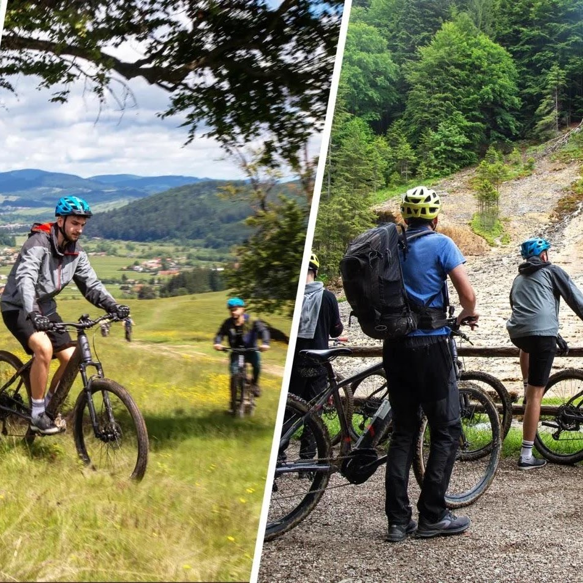
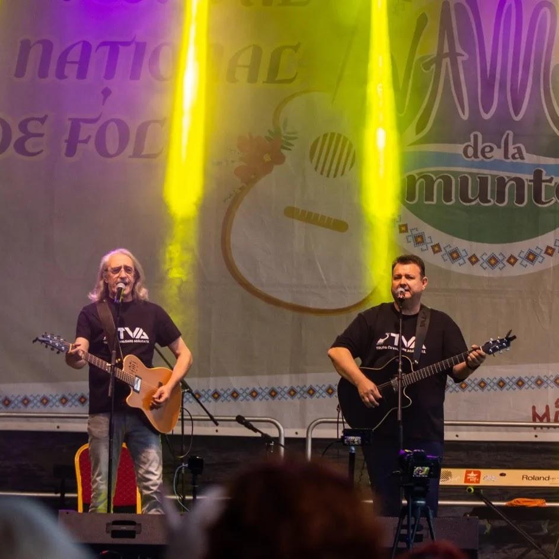
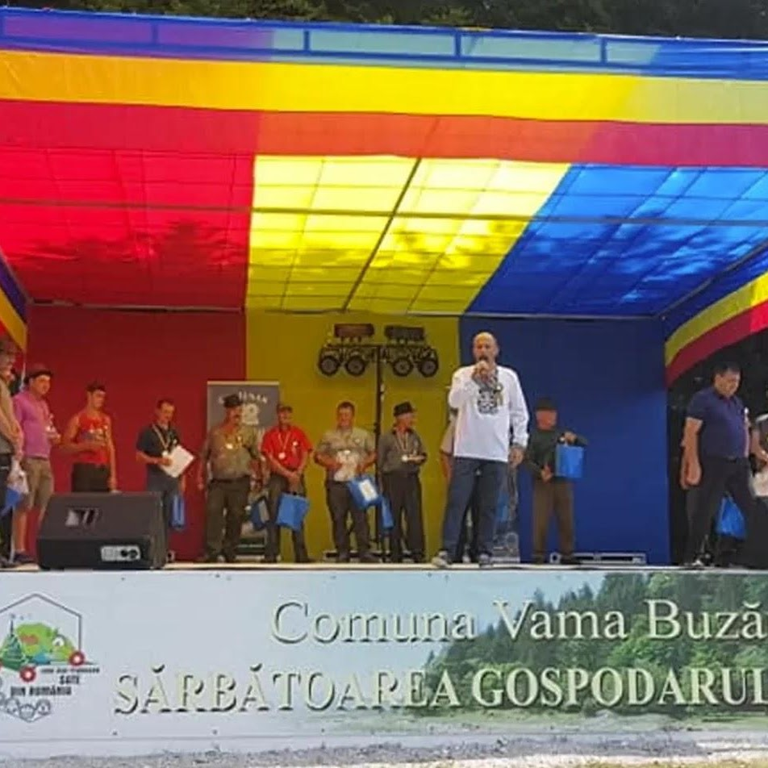
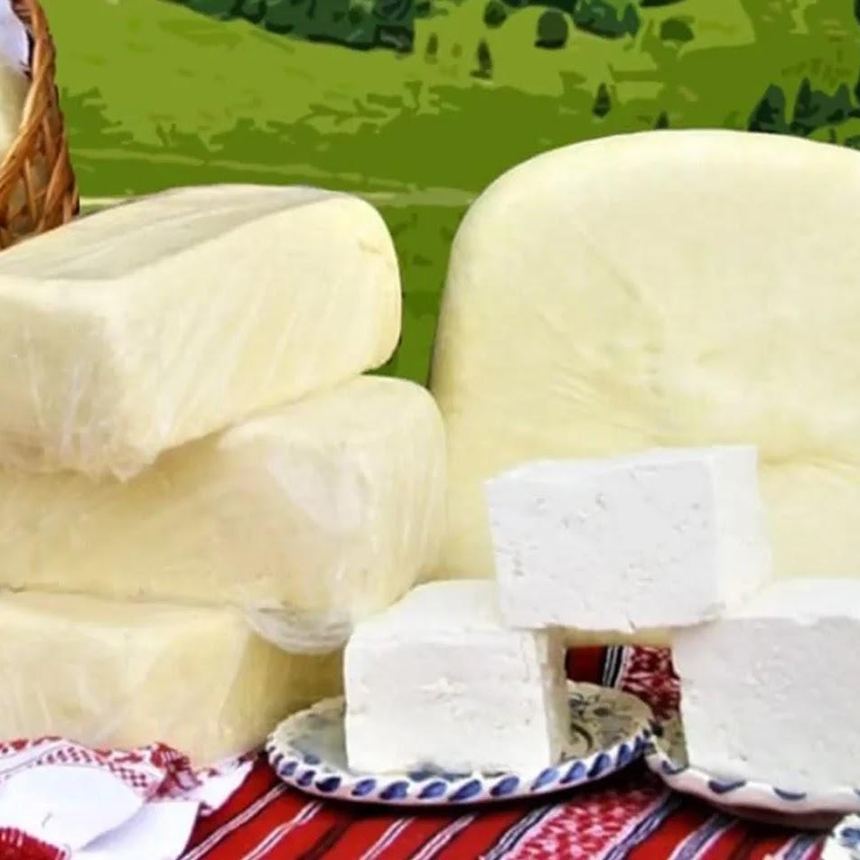

01
Vama pe bicicletă
Pedalări în grup, pe drumurile Văii Buzăului.
Ce vizitezi în zonă
De la sanctuarul zimbrilor la cascade și fortificații medievale — Vama Buzăului e plină de locuri de poveste.
„Mai mult decât o destinație turistică: un sanctuar pentru zimbri, unde natura își arată măreția, iar vizitatorii au parte de o experiență autentică, aproape de natură.”
— Rezervația Valea Zimbrilor ↗
„Unul dintre cele mai impresionante puncte de atracție din zonă, la poalele Munților Ciucaș — priveliște spectaculoasă și relaxare în mijlocul naturii.”
— Cascada Urlătoarea ↗
„O atracție de agrement într-o zonă liniștită și pitorească — pescuit recreativ, picnicuri și plimbări în jurul iazului, la poalele Munților Ciucaș.”
— Iazul din Vama Buzăului ↗
„Mese gătite cu ingrediente proaspete culese din grădinile localnicilor, după rețete tradiționale moștenite din generație în generație — cu povești din spatele rețetelor, de la gazde primitoare.”
— Gastro Local ↗
„O destinație ecoturistică deosebită în Carpații de Curbură, cu oportunități excelente pentru drumeții și cicloturism, printre peisaje montane spectaculoase.”
— Vama pe Bicicletă ↗
„Fortificații medievale și moderne în zona Pasului Tabla Buții, un punct strategic de trecere între Transilvania și Țara Românească.”
— Festungurile din Vama ↗
„Lecții de călărie pentru începători și avansați și plimbări ghidate pe trasee special amenajate — zona montană, explorată pe călare.”
— Centrul de Echitație Aniral ↗
„Punct istoric la granița dintre Transilvania și Țara Românească, cunoscut odinioară drept «Poarta Buzaielor» — trecătoare strategică pentru comercianți și călători.”
— Tabla Buții ↗
În calendarul Văii Buzăului
Festivaluri, târguri și pedalări în grup — fiecare sezon are ceva de povestit.

Pedalări în grup, pe drumurile Văii Buzăului.

Muzică folk și prieteni, în aer liber.

Tradiții și meșteșuguri ale gospodarilor din Vama.

Brânzeturi și produse de la stânele din zonă.
Unde dormi în zonă
Pensiuni și camere la munte, pentru cei care rămân mai mult de o zi.
„În inima Munților Ciucaș, înconjurată de natură și confort — în 2026, The Valley Resort își deschide porțile, cu cazări pentru toate preferințele și facilități premium.”
— The Valley Resort ↗
„În mijlocul naturii, în rezervația naturală Ciucaș — un complex turistic unde ospitalitatea și bunul dispoziție sunt la ele acasă. La Vama54 Family Resort & SPA distracția nu are limită de vârstă.”
— Vama 54 ↗
Te așteptăm
Lasă graba deoparte și vino să petreci câteva ore în tihnă, în Buzaiel.
Planifică o vizită